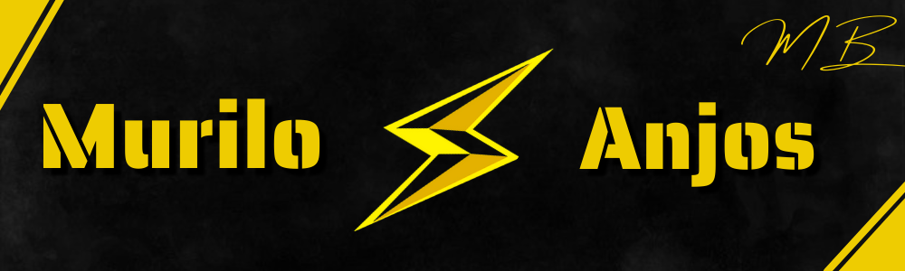
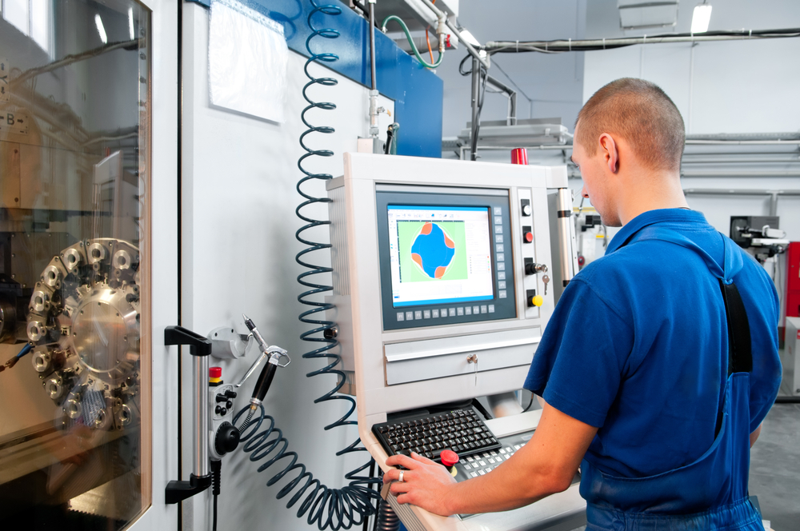

PLANOS
Aqui você irá conhecer todos os meus planejamentos para o meu futuro. Eu sempre fui uma pessoa que quis ter inúmeras opções de caminhos a se guiar, então aqui você verá todos os meus principais planos para daqui alguns anos.
FACULDADES:
Estou longe de estar decidido em qual faculdade seguir, mas tenho algumas ideias de cursos, veja comigo alguns exemplos.

ENGENHARIA DE SOFTWARE:
A engenharia em geral sempre foi algo que me atraiu, mas quando eu entrei na Etec, conheci e tive uma melhor noção sobre a importância da programação para o nosso futuro. Desde então, um dos meus focos principais é poder ter o privilégio de poder cursar essa faculdade que tem uma enorme importância para mim.

ENGENHARIA DE AUTOMAÇÃO:
Bem, mais uma vez a engenharia aparecendo aqui nessa lista, mas dessa vez, a Engenharia de Automação. Eu criei essa minha vontade de práticar esse cargo antes mesmo de entrar na Etec, e confesso que ela sem mantém até hoje. Mexer com máquinas sempre foi um dos meus desejos, espero um dia poder colocar em prática esse meu sonho.

ASTRONOMIA:
A tão bela astronomia, uma das áreas em que eu mais tenho encanto, seja pela faculdade ou pela sua função trabalhista. É um cargo no qual eu tenho a ciência de que não praticarei, mas o prazer em sempre adiquirir conhecimento sobre o nosso universo é tão encatador, que eu não poderia deixar de citá-lo nessa lista.
Desenvolvido por Murilo Anjos - 2021